01 May 2022
Of a long road from mountains to desert coast
Our morning started like any other, waking up at 5:30, washing, stretching and meditating, but this time we would be closing the doors of our little house behind us for the last time. Instead of renewing our rent, we decided that we could use that money and the time we had to already jump into unknown adventures with our backpacks.
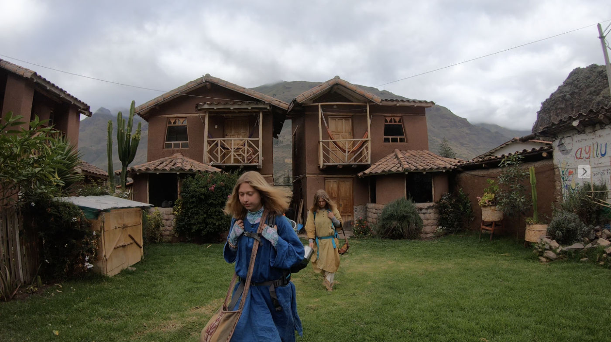
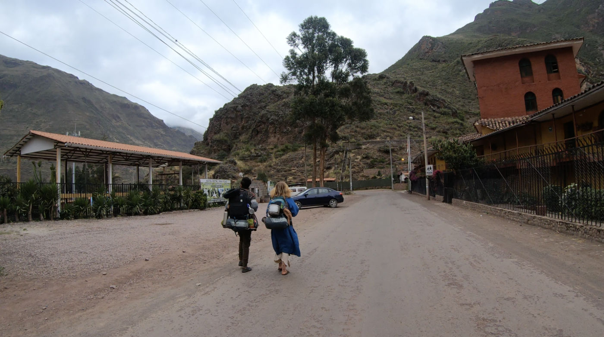
For breakfast we wanted to finish how we started, having the delicious freshly made foods from our beloved mamitas at the local market. Starting with the sandwich, with fried eggs, tomatoes and avocados and ending with a tasty oats quinoa pancake topped with strawberries, bananas and honey.
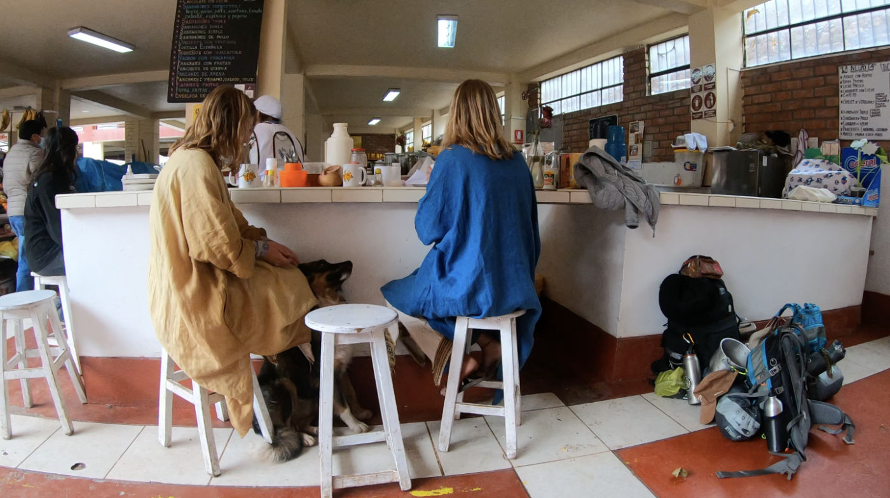
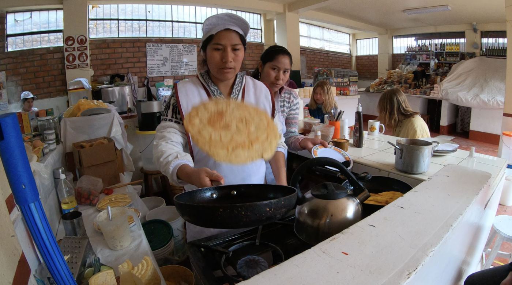
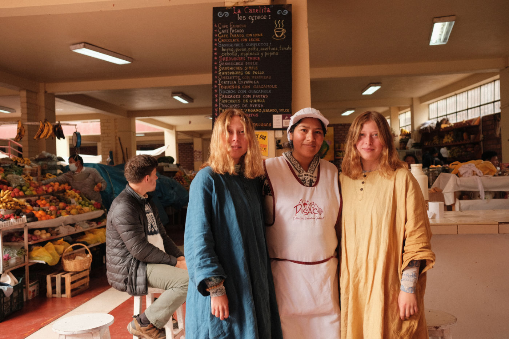
With backpacks loaded we carried on and made our way to Cusco, where our first bus awaited. There we bought our rations for the next 21 hours ride; fruits, breads, water and vento chips and then headed to the bus terminal. Our bus left at 13:30.
The first five hours of the drive were filled with what seemed to be endless sharp curves through the mountains. The air was fair, the views of snow capped mountains were breathtaking and the comfort of the bus was good enough, although for me, someone who can get easily sick on such drives, it felt like a bigger challenge. Only when the road descended closer to ground level I was able to eat something and fall asleep.
The wake up was already in what seemed to be a whole different country. In one side the dark blue grey-ish tones of the sky indicated that the night was behind us and on the other side the confirmation, a pale sun rising above a desert landscape. It took me some time to realise that I was not in a dream and only when my eyes adjusted to the view I was able to start processing.
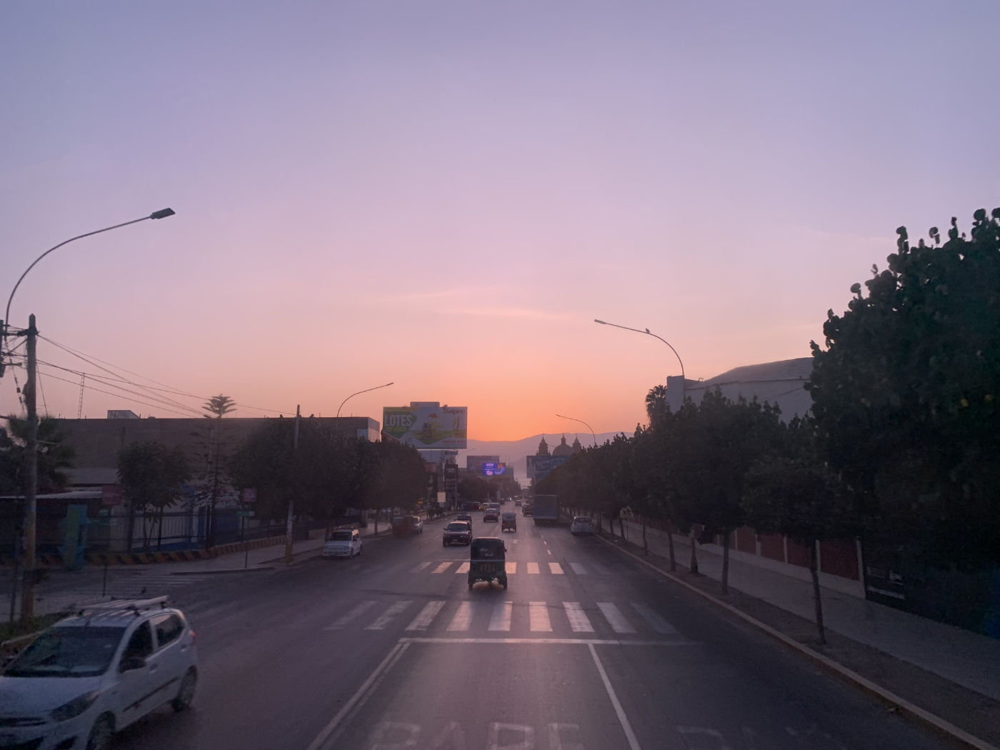
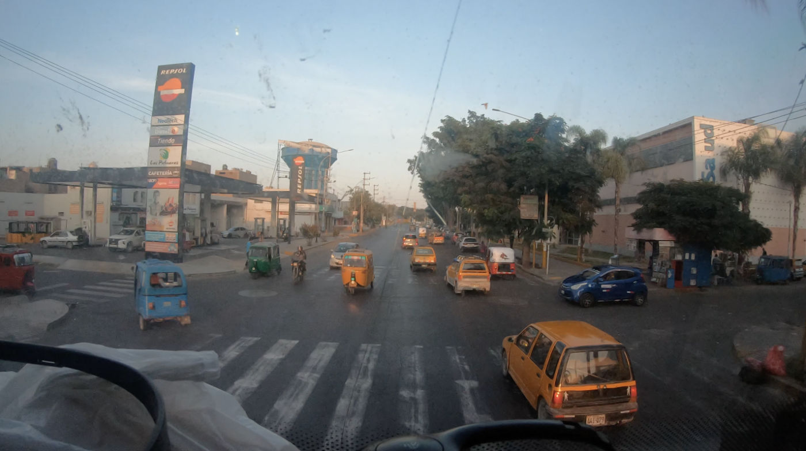
The bus finally reached a road that went by the coast and that's when we finally, for the first time in our lives, saw the Pacific Ocean. A blurred blue colour of sky blending with the calm ocean until our eyes could see. On the other side of the road the desert landscapes continued, passing by ghost desert towns that seemed like they've been abandoned decades ago. It all seemed surreal, out of a post-apocalyptical story.
The coastal road went on for another couple of hours until we had our first and only long break at a restaurant by the road at around 8:00. We went out to have our breakfast, stretch our legs and breath some fresh air. Sadly no coffe because we were not prepared to pay 5 Soles for one cup of coffee. 20 minutes later we were back inside the bus for the last stretch up north towards Lima.
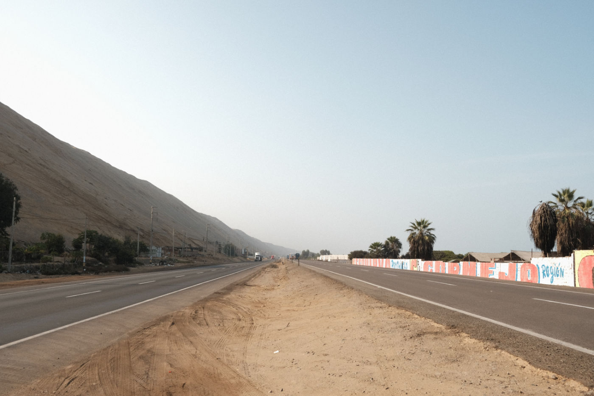
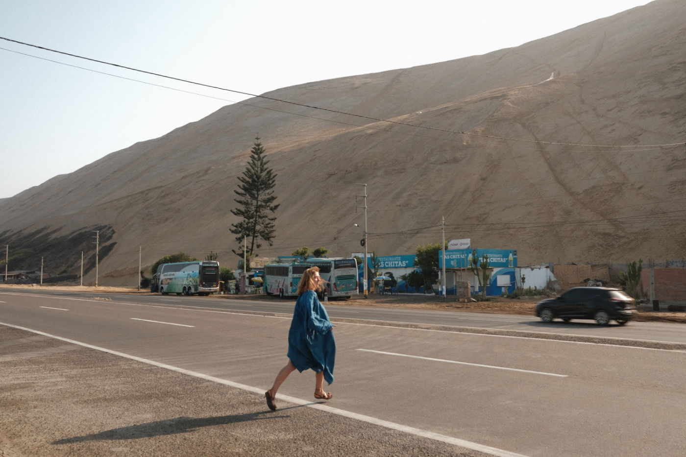
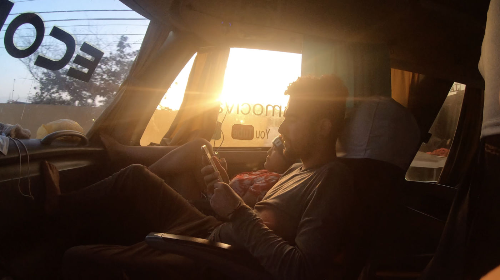
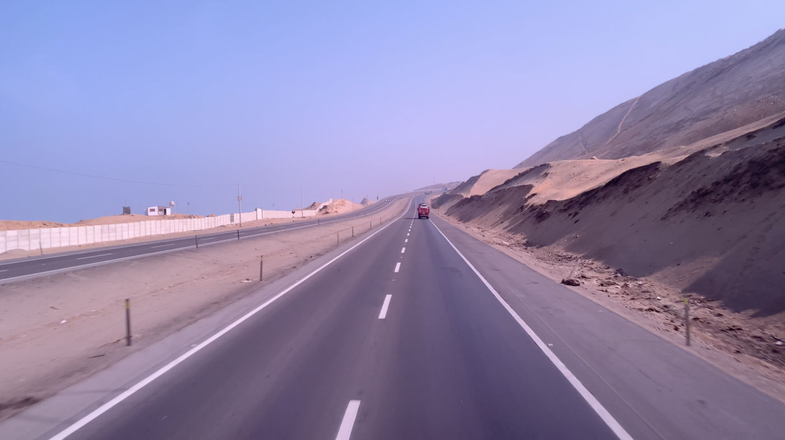
Arriving in Lima the desert started to get populated with houses and then wide roads and suddenly we were inside a full on metropolis. Our last stop was right at the heart of the city, packed with cars, drivers that were not shy in using and abusing of your honks and people in all directions offering you things for sale. We quickly jumped into the next bus station company and purchased our tickets to our next day destination, Trujillo, at a nice 40 Soles price.
The next step was to reach our Airbnb house and finally lay our backpacks down so we could go explore a little bit of this immense city, and oh did we have a great time here. Don't miss our next blog post for more details on our one and a half days in Lima.
— Maha